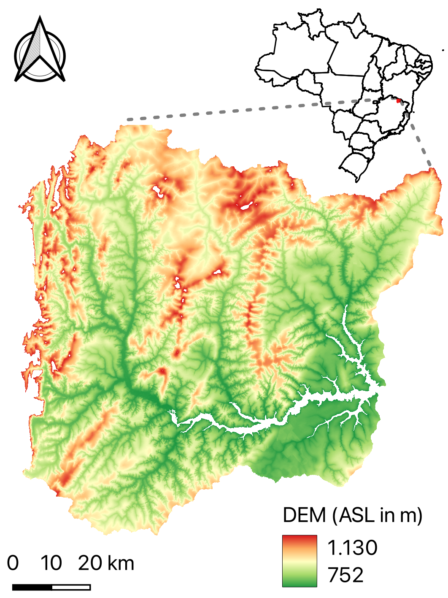
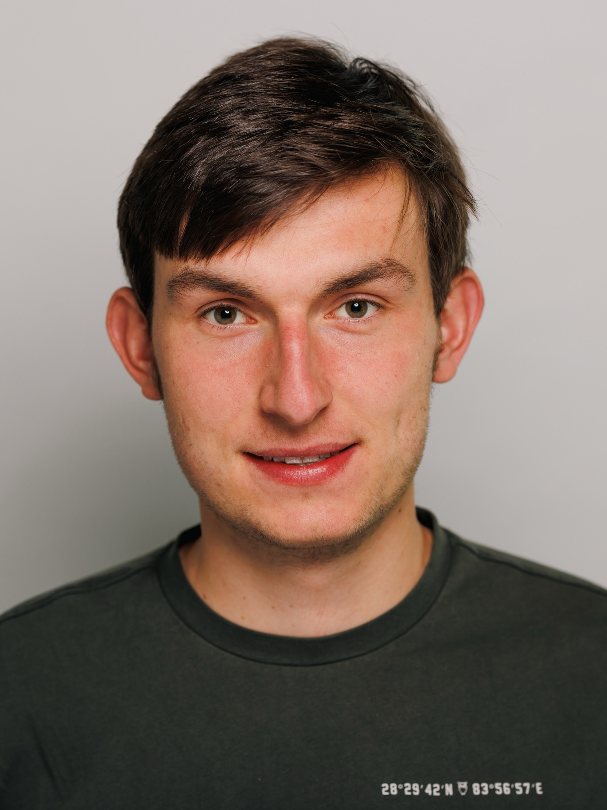

Selected projects

Land use effects on hydrological ecosystem services in the Rio Pardo watershed
Master's thesis. Seasonal Water Yield modelling in the Brazilian Cerrado with InVEST, QGIS, R and Google Earth Engine.
In preparation
Grain size mapping in rivers
Streambed substrates with GIS, Python and remote sensing data.
In preparation
Fish habitat suitability modelling
Habitat modelling with CASiMiR and analysis of the model results.
In preparation
Bachelor's thesis: biomass transfer
Field sampling, laboratory analysis, stable isotopes (N15) and R.
About

I study environmental engineering and work on water and landscape questions with spatial data, models and field measurements. The projects on this site show the methods I used and what the results can and cannot say.
- Studies
- M.Eng. Environmental Engineering (focus: environmental forensics and monitoring), Hochschule Weihenstephan-Triesdorf
- Earlier degree
- B.Eng. Environmental Protection, Hochschule Weihenstephan-Triesdorf
- Languages
- German (native), French (B2/C1), English (B2), Spanish (B1), Portuguese (basic)